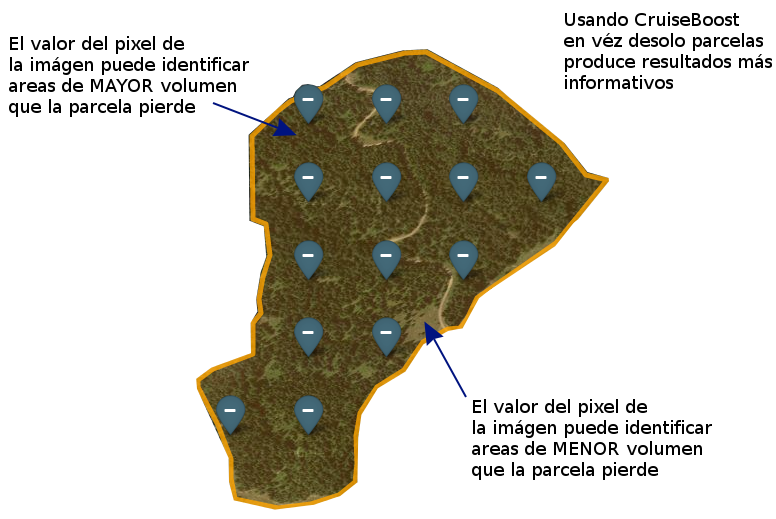
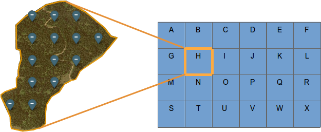
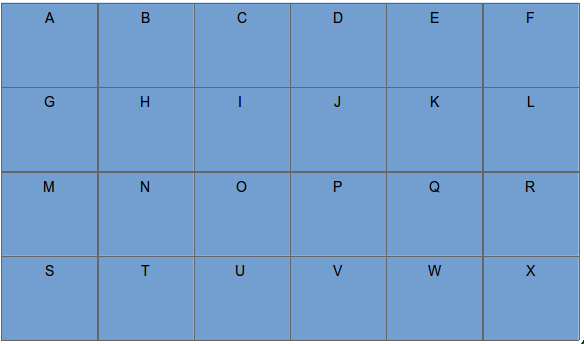
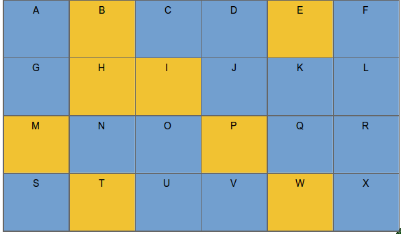
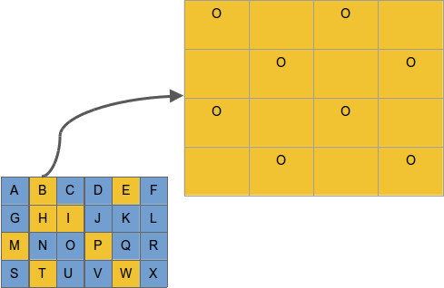
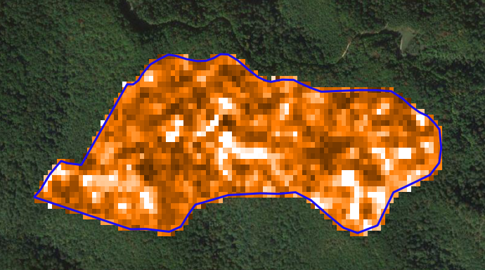

Muestreo asistido por imágenes satelitales
CruiseBoost para rodal y estrato
Francisco Zambrano Bigiarini
Representante Latinoamérica
SILVIATIERRA
- Startup Norteamericana creada el año 2009.
SILVIATIERRA
- Esta ayudando a mejorar el manejo forestal en los Estados Unidos.
- Aumentando el retorno de la inversión.
- Equipo de emprendedores de la Universidad de Yale, USA.
"Better data, better decisions"
CruiseBoost -> parcelas + imágenes =
- 25% de ahorro para rodal
- 60% de ahorro para estrato
- alta calidad y resolución
- manten el protocolo normal de muestreo
- usa el grillado estandar
- bajo riesgo

CruiseBoost para rodal
Menor costo y mayor precisión vs muestreo no asistido
--Muestreo no asistido--
- 22 parcelas:
- Costo = 440$USD
- Precisión = 65%

--CruiseBoost--
- 14 parcelas + asistencia por imágenes:
- Costo = 335$USD
- Precisión = 90%

CruiseBoost para rodal

CruiseBoost para rodal
La relación entre las mediciones realizadas en las parcelas y los valores del pixel de la imágen permiten la estimación de APH, AB, especies y distribución de los diámetros, y por lo tanto listas jerarquicas de todas las areas cubiertas.

CruiseBoost para rodal


CruiseBoost para rodal
Usando parcelas + imágenes:
- Permite ahorrar ~25% en el inventario mientras mantiene o mejora la precisión.
- Resulta en un inventario con un completo treelist, con detalle de especies y DAP, y tabla de reporte por rodal que pueden ser resumidos y hacerlos crecer.
- Produce útiles heatmaps que entregan mas información para el personal en terreno.
CruiseBoost para estrato
Obtenga eficiencia a escala
- Paga por un muestreo a nivel de estrato, y obten información a nivel de rodal.

Ahorro de ~60%+
CruiseBoost para estrato
Ejemplo de diseño de muestreo CruiseBoost
Las grillas de abajo representan rodaels en un diseño "estrato" de ejemplo con 24 rodales de A hasta la X.

Nota para biometricians: CruiseBoost es un muestreo imagen-asistido de dos etapas.
CruiseBoost para estrato
Etapa 1: Selección aleatoria de rodales
Se seleccionaron 8 rodales de forma aleatoria de un total de 24.

CruiseBoost para estrato
Etapa 2: Grillas de parcelas en los rodales seleccionados
Rodal B

CruiseBoost para estrato
Nivel de análisis de estrato
Estrato = \(\sum{[A-X]}\)
(suma de todos los rodales)
- Solo parcelas: estimación no sesgada de la poblacion
- +/- 6% error de muestreo
- Parcelas + imagenes:estimación no sesgada de la poblacion
- +/- 3% error de muestreo
CruiseBoost para estrato
Nivel de análisis de rodales (rodales muestreados)
Muestreados = [B,E,H,I,M,P,T,W]
Para cada uno de los rodales:
- Solo parcelas:
- Pecisión = 70%
- Parcelas + imagenes
- Pecisión = 90%
Heatmap de sub-rodal para especie, volumen

CruiseBoost para estrato
Nivel de análisis de rodales (rodales no muestreados)
No muestreados = [A,C,D,F,G,J,K,L,N,O,Q,R,S,U,V,X]
Para cada uno de esos rodales:
- Treelist y tabla-rodal.
- Precisión = 90%
- Sub-rodal heatmap para especie, volumen, etc.

CruiseBoost para estrato
Economía
24 rodales | 389 há | Información nivel de rodal | 90% precision
Solo parcelas
Inputs:
- 24 rodales muestreados con parcelas
- 20 parcelas por rodal
- $20 por parcela
Total:
= $ 9.600
$24.7 / há
Parcelas + imágenes
Inputs:
- 8 rodales muestreados con parcelas
- 10 parcelas por rodal
$20 por parcela
$6.2/há por imagenes y análisis Total:
= $ 4.012
$10.3 / há
~60% reducción de costo
CruiseBoost es:
- Mas barato que muestreo solo con parcelas a nivel de rodal
- Mas informativo que los diseño a nivel de estrato
- Rapido, ideal para adquisiciones
- Preciso, estimaciones no sesgadas
- Alta resolución para operacion y planeamiento
- Sin riesgo
CruiseBoost es ideal para:
- Adquisiciones / ventas
- Cierre de corona
- Obten el nivel de detalle de rodal que necesita para decidir en la fecha de raleo
- Despues del raleo
- Proporciona el precisio detalle a nivel de arbol que necesita para projectar futuras condiciones.
- Rodales naturales y mezclados
- Información específica de especies.
- Mejoras significativas para rodales con gran variación
Ejemplo (Here we can show results)
¿Preguntas?

Si piensas en alguna luego, escribeme